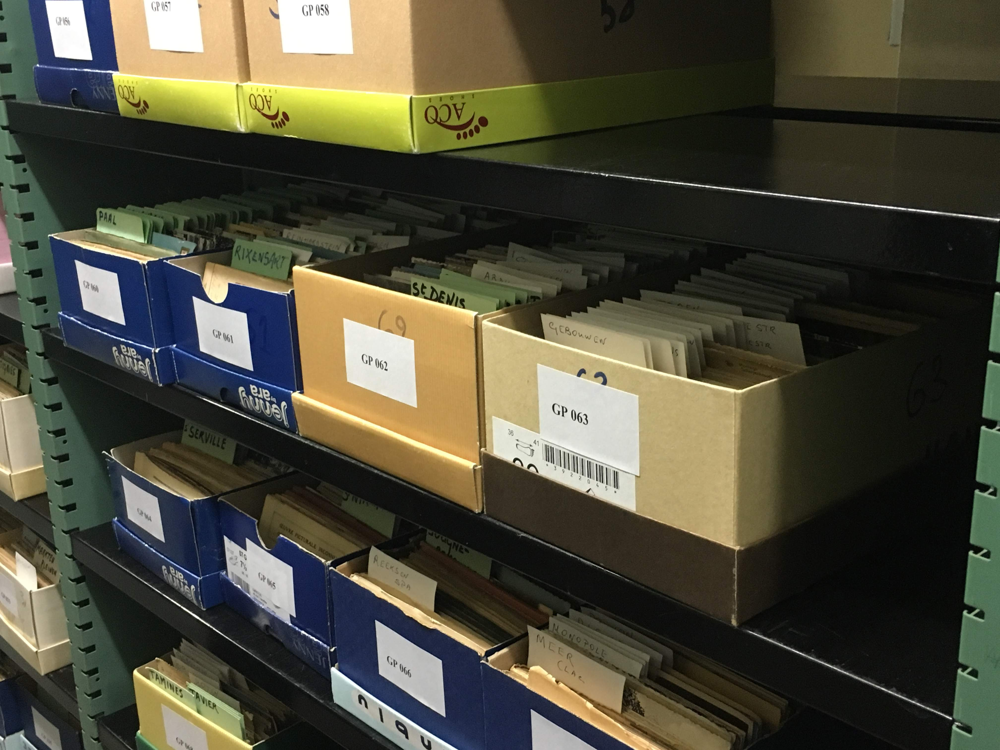

During the year 2017 the University Library of the KU Leuven began the digitization project
of a considerable number of old Belgian travel postcards dated back from the end of the 19th
to the the 20th century. The postcards are part of a private collection of more than 100.000
items, donated to the KU Leuven by the owner’s family after his deceased.
In the archive of the University Library they are still stored in the way
they were catalogued by the owner: grouped inside a considerable quantity
of shoes boxes and accurately divided by place, name of the monument,
kind of objects etc. So far the University Library has digitized 46.857 postcards,
which can be consulted and searched online on the KU Leuven University Library website.
